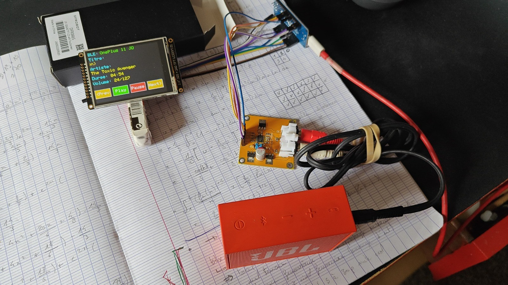
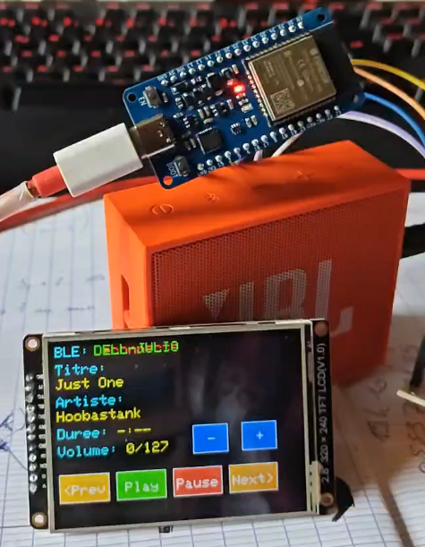
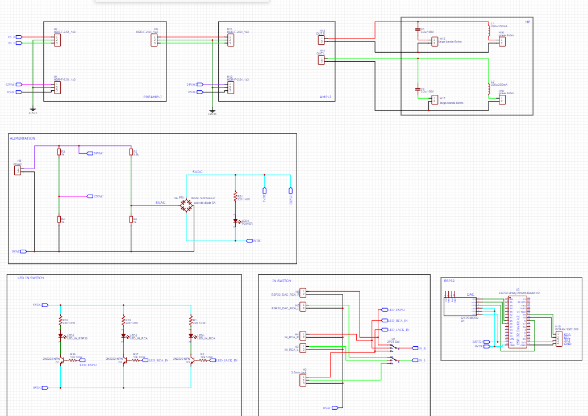

Enceinte connectée
← RetourDescription :
Réalisation d'une enceinte connectée en utilisant un ESP32 pour la connexion bluetooth A2DP, un DAC externe connecté en I2C et d’un écran tactile pour le contrôle.
Le préamplificateur avec le contrôle de tonalité, l’amplificateur de puissance et les haut-parleurs (HP) sont achetés dans le commerce.
L’entrée peut être bluetooth ou filaire, le choix se fait en utilisant un switch (avec des leds pour indiquer le choix).
Etapes :
- Codage en C++ du transfert du flux audio en Bluetooth A2DP. Comme tous mes projets j’utilise un GitHub personnel
- Codage de la redirection du flux en I2C sur le DAC externe (ayant un taux d’échantillonnage fréquence et bits supérieur à l’ESP32)
- Codage de l’écran tactile (affichage des métadonnées et création des boutons)
- Recherche des composants nécessaires (préamplificateur avec contrôle de tonalité, amplificateur, transformateur d’alimentation 230VAC-24VAC, haut-parleur, etc)
- Réalisation du schéma électronique
- Ajout de ponts diviseur de tension pour l’alimentation AC 12V et 5V ; ajout d’un pont de diode pour redresser le 5V destiné aux leds et l’ESP32)
Environnement technique :
ArduinoIDE, ESP32, Bluetooth, I2C, DAC, C++, EasyEDA


